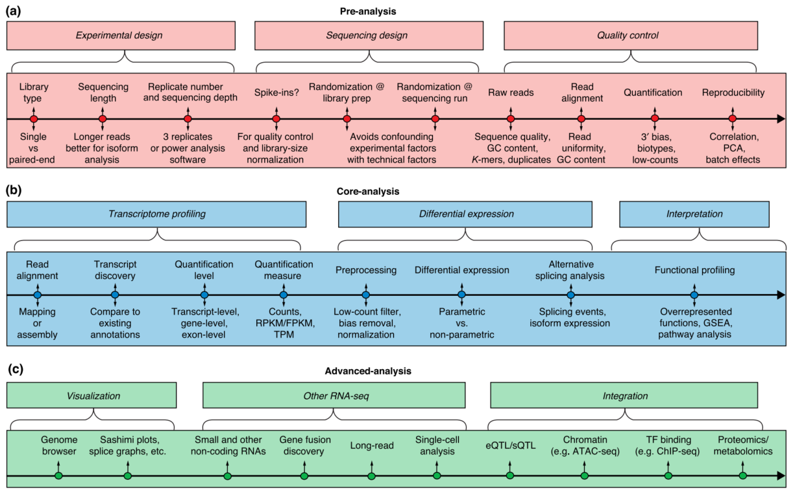

Chapter 3: Snakemake for RNA-seq

Contents
Introduction
Snakemake is a python-based pipeline software that can be used to automate the workflow of bioinformatics analysis. In this chapter, we will use snakemake to build a RNA-seq analysis pipeline. 
Installation
- Install Miniconda
- Download the Miniconda installer for Linux from here
- Run the installer
- Add the following line to your .bashrc file
1export PATH="/home/username/miniconda3/bin:$PATH"- Run the following command to update conda
1conda update conda - Install Snakemake
1conda install -c bioconda -c conda-forge snakemake
Pipeline
- Quality Control
- FastQC
- Input: Fastq files
- Output: FastQC report
- Command
1fastqc -o {output} {input}1 2 3 4 5 6 7 8 9rule fastqc: input: "data/{sample}_1.fastq.gz", "data/{sample}_2.fastq.gz" output: "results/fastqc/{sample}_1_fastqc.html", "results/fastqc/{sample}_2_fastqc.html" shell: "fastqc -o {output} {input}" - MultiQC
- Input: FastQC report
- Output: MultiQC report
- Command
1multiqc -o {output} {input}1 2 3 4 5 6 7 8rule multiqc: input: "results/fastqc/{sample}_1_fastqc.html", "results/fastqc/{sample}_2_fastqc.html" output: "results/multiqc/multiqc_report.html" shell: "multiqc -o {output} {input}" - Trimming
- Input: Fastq files
- Output: Trimmed fastq files
- Command
1java -jar <Path to trimmomatic.jar> --PE --threads -o {input} {output}1 2 3 4 5 6 7 8 9 10 11rule trimmomatic: input: "data/{sample}_1.fastq.gz", "data/{sample}_2.fastq.gz" output: "results/trimmomatic/{sample}_1_paired.fastq.gz", "results/trimmomatic/{sample}_1_unpaired.fastq.gz", "results/trimmomatic/{sample}_2_paired.fastq.gz", "results/trimmomatic/{sample}_2_unpaired.fastq.gz" shell: "java -jar <Path to trimmomatic.jar> --PE --threads -o {input} {output}"
- FastQC
- Alignment
There are many aligners that can be used for RNA-seq data. bwa-mem2, bowtie2, hisat2, STAR,TopHat2, etc. In this tutorial, we will use Hisat2 aligner.
- Hisat2 genome reference index
- Input: Genome reference file
- Output: Hisat2 genome reference index
- Command
1hisat2-build -f {input} {output}1 2 3 4 5 6 7 8 9 10 11 12 13 14rule hisat2_index: input: "data/genome.fa" output: "results/hisat2_index/genome.1.ht2", "results/hisat2_index/genome.2.ht2", "results/hisat2_index/genome.3.ht2", "results/hisat2_index/genome.4.ht2", "results/hisat2_index/genome.5.ht2", "results/hisat2_index/genome.6.ht2", "results/hisat2_index/genome.7.ht2", "results/hisat2_index/genome.8.ht2" shell: "hisat2-build -f {input} {output}"you can also download the index in the website
- Hisat2 alignment
- Input: Trimmed fastq files
- Output: BAM files
- Command
1hisat2 -x <Path to reference genome> -1 {input} -2 {input} -S {output}1 2 3 4 5 6 7 8rule hisat2: input: "results/trimmomatic/{sample}_1_paired.fastq.gz", "results/trimmomatic/{sample}_2_paired.fastq.gz" output: "results/hisat2/{sample}.bam" shell: "hisat2 -x <Path to reference genome> -1 {input} -2 {input} -S {output}" - Samtools sort
- Input: BAM files
- Output: Sorted BAM files
- Command
1samtools sort -o {output} {input}1 2 3 4 5 6 7rule samtools_sort: input: "results/hisat2/{sample}.bam" output: "results/samtools_sort/{sample}.sorted.bam" shell: "samtools sort -o {output} {input}" - Featurecounts
- Input: All sorted BAM files
- Output: Featurecounts report
- Command
1featureCounts -T 20 -p -t exon -g gene_id -a <Path to annotation file> -o {output} {inputs}1 2 3 4 5 6 7rule featurecounts: input: expand("results/samtools_sort/{sample}.sorted.bam", sample=SAMPLES) output: "results/featurecounts/featurecounts_report.txt" shell: "featureCounts -T 20 -p -t exon -g gene_id -a <Path to annotation file> -o {output} {inputs}" - Differential expression analysis
- Input: Featurecounts report
- Output: Differential expression analysis report
- Command
1Rscript <Path to DESeq2.R> {input} {output}1 2 3 4 5 6 7rule DESeq2: input: "results/featurecounts/featurecounts_report.txt" output: "results/DESeq2/DESeq2_report.txt" shell: "Rscript <Path to DESeq2.R> {input} {output}"
- Hisat2 genome reference index
You can make a Rscript, Deseq2.R, from Deseq2 tutorial and run it in the terminal.
- GO and GSEA
- Input: Differential expression analysis report
- Output: GO and GSEA report
- Command
1Rscript <Path to GO_GSEA.R> {input} {output}1 2 3 4 5 6 7 8rule GO_GSEA: input: "results/DESeq2/DESeq2_report.txt" output: "results/GO_GSEA/GO_report.txt", "results/GO_GSEA/GSEA_report.txt" shell: "Rscript <Path to GO_GSEA.R> {input} {output}"
You can make a Rscript, GO_GSEA.R, from clusterProfile tutorial and run it in the terminal.
1. Conesa, Ana, et al. “A survey of best practices for RNA-seq data analysis.” Genome biology 17.1 (2016): 1-19.